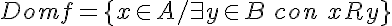
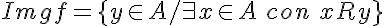
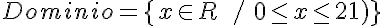
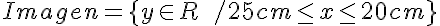
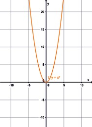
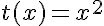
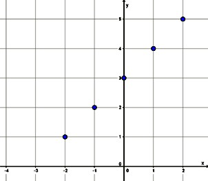
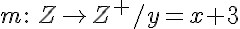
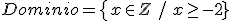
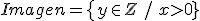

Dominio e Imagen
Dominio e Imagen
Se pueden definir, asociados a la relación, dos conjuntos: el dominio y su imagen, que serán subconjuntos del conjunto de partida y de llegada, respectivamente.
|
El dominio de una función es el conjunto formado por todos los elementos del conjunto de partida que están relacionados con, al menos, un elemento del conjunto de llegada. La imagen (Rango) de una función es el conjunto formado por los elementos del conjunto de llegada que están relacionados con algún elemento del dominio de la relación. |
En símbolos matemáticos:


En nuestro ejemplo del nadador, el conjunto dominio está determinado por el tiempo, por lo que comienza en el instante 0 y concluye a los 21 minutos, que es el tiempo en el cual Gonzalo concluye con la práctica. Esto lo podemos representar de la siguiente manera:

La imagen está compuesta por las alturas sobre el nivel del mar en la que se encuentra Gonzalo de acuerdo con el tiempo:

Si tenemos una función definida de la siguiente manera:
Estamos indicando que el conjunto dominio y el conjunto imagen es el conjunto de los números reales (R). La variable x podrá tomar cualquier valor real que se le asigne y por imagen producirá también un valor real. A esta función se la llama Función identidad.
Veamos algunos ejemplos
|  |
 Dominio = En este caso, la variable x puede tomar cualquier valor real ya que para cualquier valor real está definida la potencia.
Imagen = Esto se debe a que la potencia par de un número real siempre será otro número real positivo. Su representación gráfica nos permite comprobar lo planteado. |
|  | En una función definida
   En esta función se define específicamente que el conjunto imagen está compuesto sólo por los valores positivos, por lo cual el conjunto dominio no podrá tomar valores menores a -2, ya que, en ese caso, no cumpliría con la definición de la función. |

En los siguientes videos se amplía el concepto de dominio e imagen o rango de una función y se analizan algunas funciones particulares:
¿Qué es el dominio de una función?
¿Qué es el rango o imagen de una función?
Cómo encontrar el dominio de una función
Obra publicada con Licencia Creative Commons Reconocimiento Compartir igual 4.0